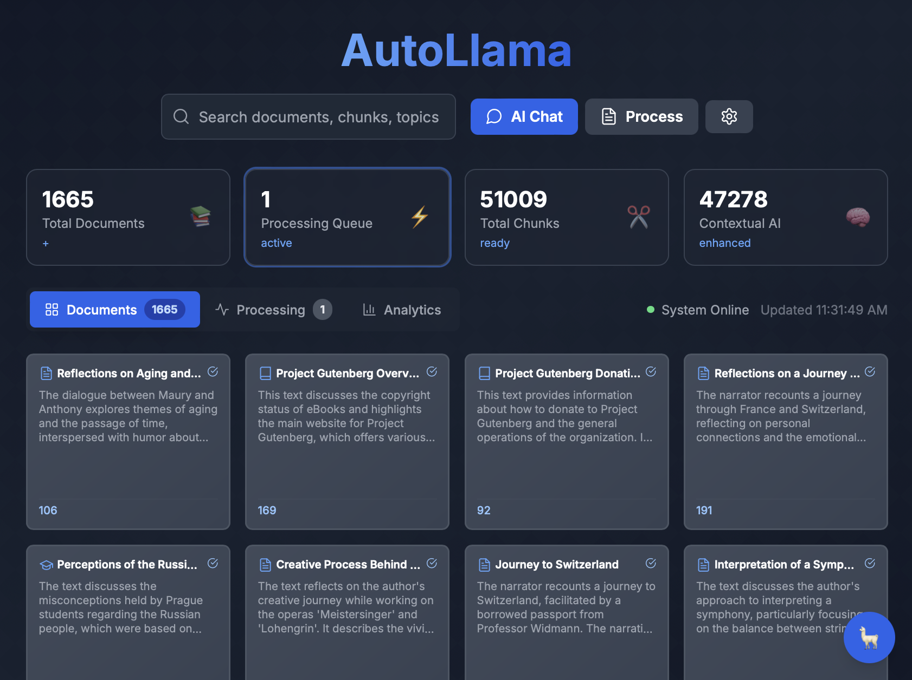
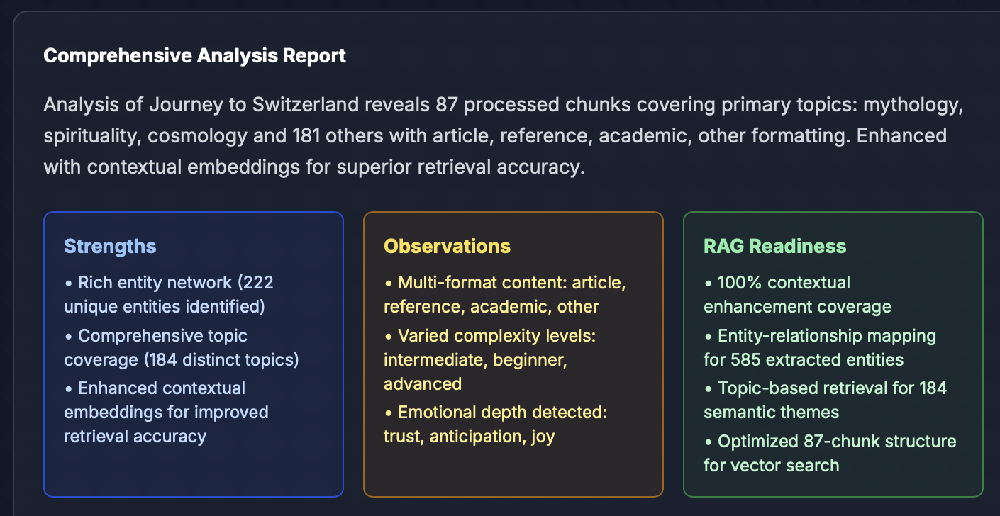
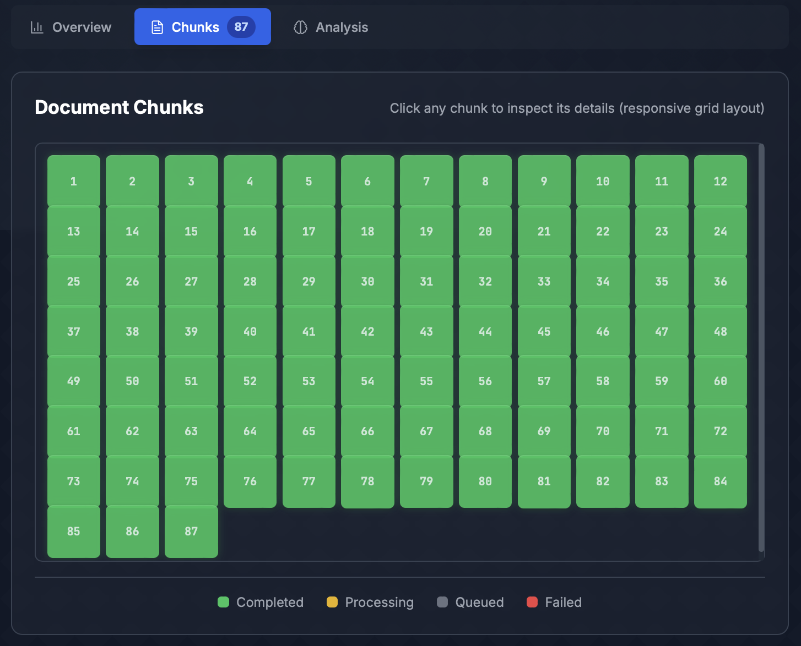
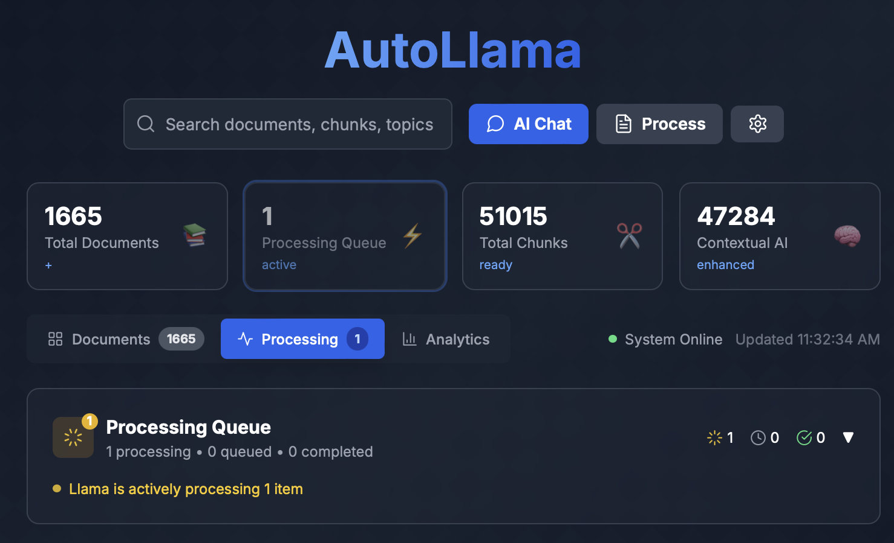
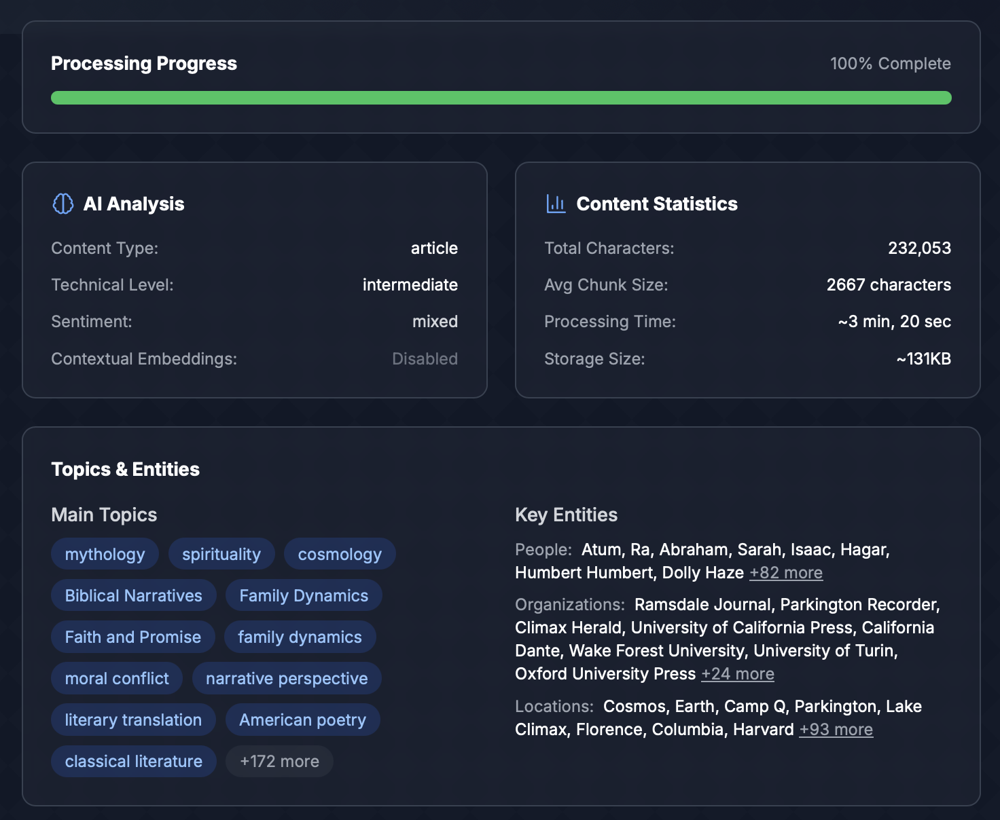
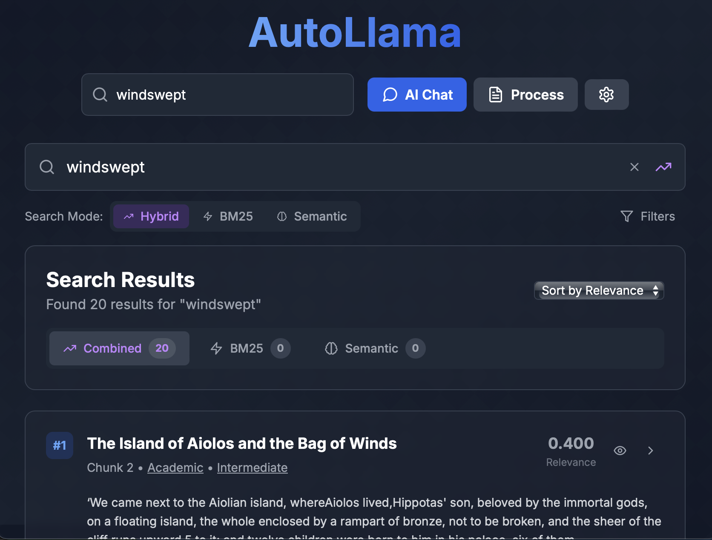
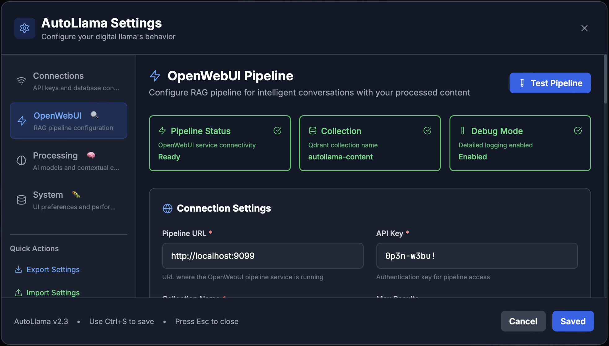
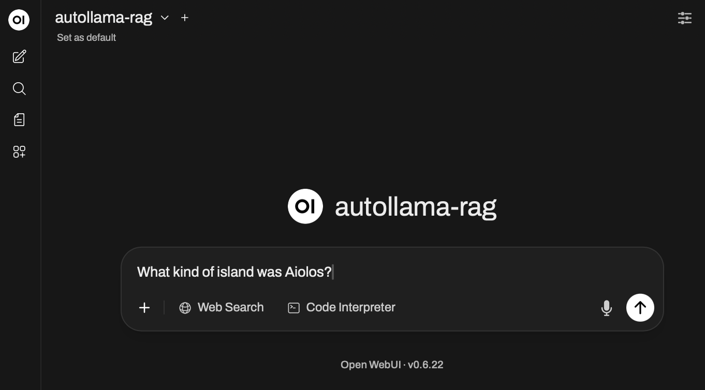
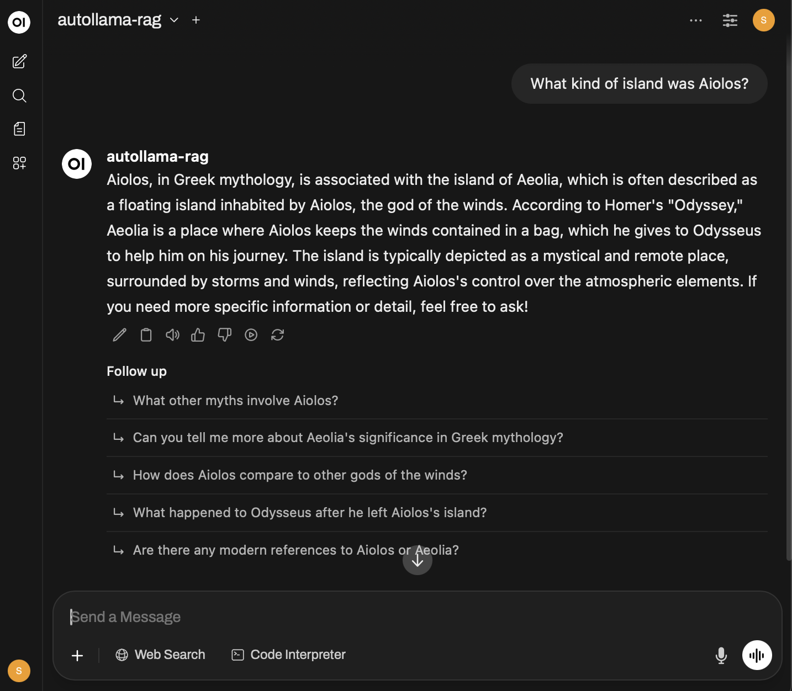

AutoLlama Screenshot Test Page
If you can see the images below, the screenshots are working correctly:
1. Dashboard Main

2. Document Analysis

3. Chunks Grid

4. Processing Queue

5. AI Analysis Panel

6. Ultra-Fast Contextual Search

🔌 OpenWebUI Integration Screenshots
7. OpenWebUI Settings

8. OpenWebUI Model Selection

9. OpenWebUI Query Response

← Back to Main Page